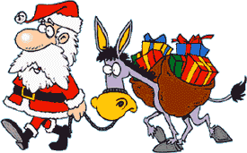

Mikulás, Tél apó, Télapó
A Mikulás legendája Szent Miklós életére vezethető vissza, aki Myra püspöke volt a Kr. u. IV. században. Egy alkalommal meghallotta a templomban, hogy egy apa hozomány hiányában nem tudja férjhez adni három leányát. Elhatározta, hogy az apjától örökölt pénzének egy részét nekik adja, és abban az évben, decemberben kettő arannyal teli erszényt tett az apa ablakába. Ezt a következő évben ugyanakkor megismételte, hogy minden lány ki tudjon házasodni. A harmadik évben ki szerette volna deríteni az apa, hogy ki a jótevő, hogy megköszönje a nagylelkű adományokat. Miklós azonban azt válaszolta, hogy egyedül Istennek tartoznak hálával, neki nem. Miklós püspök nevéhez egyébként sok másik csoda köthető, például a három halálra ítélt férfi megmentése, vagy a tengeri vihar lecsendesítése. Halála pont december 6-án következett be, így a katolikus egyház ezt a napot választotta a Mikulás ünnepnapjává. Szent Miklós a gyermekek és a diákok védőszentje, Magyarországon pedig Kecskemét város védelmezője.
Egyes - főleg germán - feltételezések szerint a Tél Apó vagy Fagy Apó Odin főisten elhíresült változata. Az isten kettőssége, jó és rossz szokása mutatkozik meg december 6-án, hiszen ajándékot visz a jó gyerekeknek, a rosszaknak pedig virgácsot vagy szenet. A néphagyomány szerint a gyerekek Odin lovának répát és zabot tettek ki, később ez a szokás alakult át a Mikulásnak szánt kekszre és tejre. Az északi fagyos táj démona vagy istene a skandináv kultúrkörben is elterjedt. Ott Yule-nak hívták, de később a lappföldi Joulupukki figurája azonosult legjobban a Mikulás alakjával.